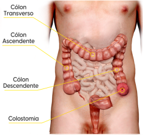
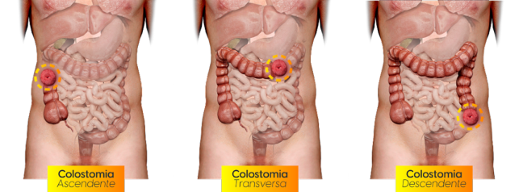

colostomia
3min de leitura

Definição:
É um procedimento cirúrgico, temporário ou definitivo, que exterioriza o intestino grosso através da parede abdominal anterior. Há a colostomia:
- Terminal: posicionada no cólon descendente, no lado esquerdo, geralmente no quadrante inferior;
- em Alça: posicionada no cólon transverso (quadrante superior direito ou esquerdo) e no sigmoide.

Como localização existem:
A característica do efluente, de acordo com o tipo de estomia:

indicação:
A colostomia é realizada quando o indivíduo enfrenta problemas que o impedem de eliminar os gases/fezes pela via fisiológica: a região anal. Usualmente, as indicações relacionadas ao tempo das estomias são:
- Temporária: cirurgias de emergência, proteção de uma anastomose e desviar o material fecal em certas cirurgias anais.
- Definitiva: (casos de amputação do reto).